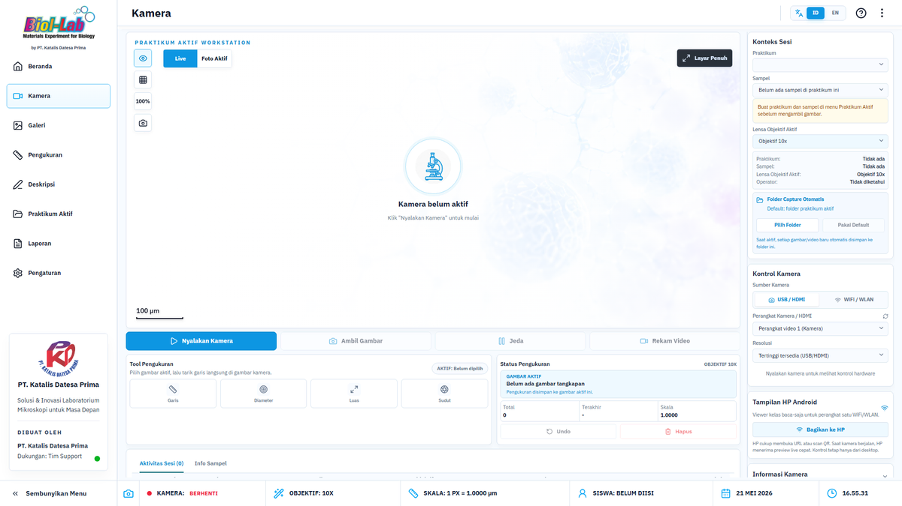
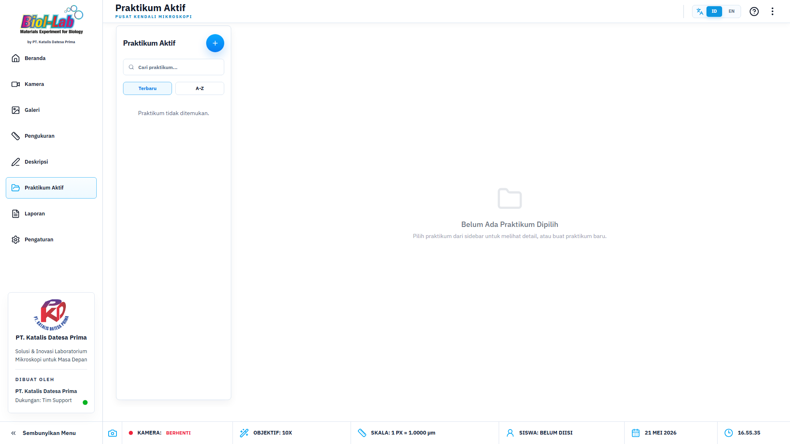
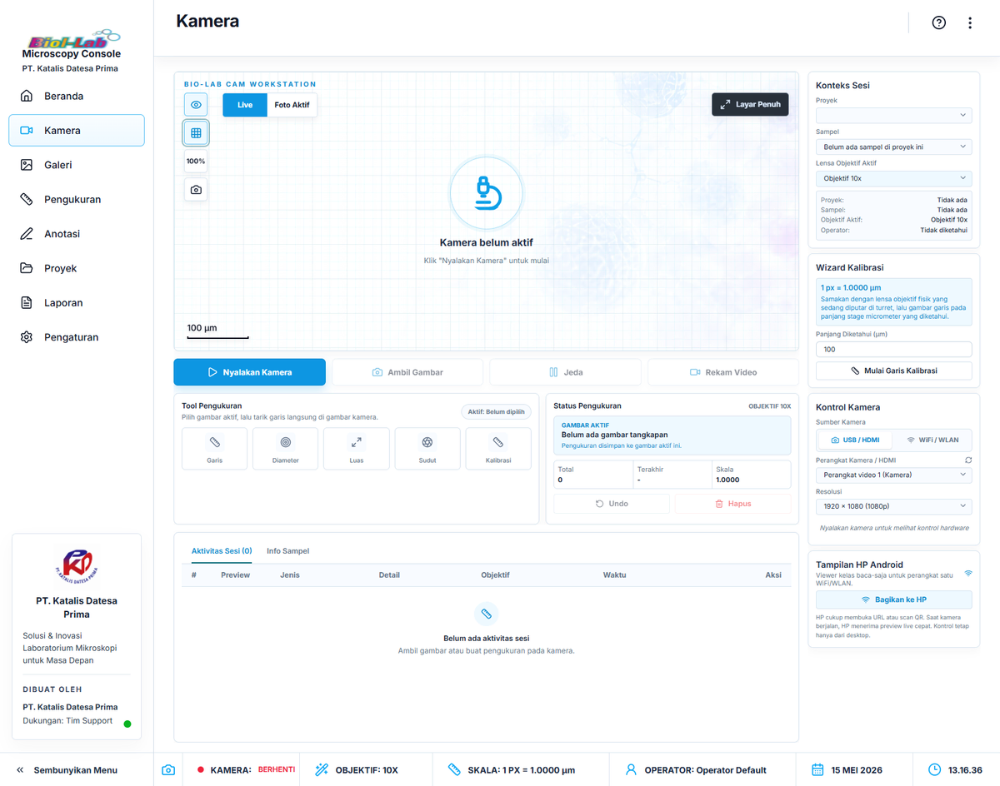
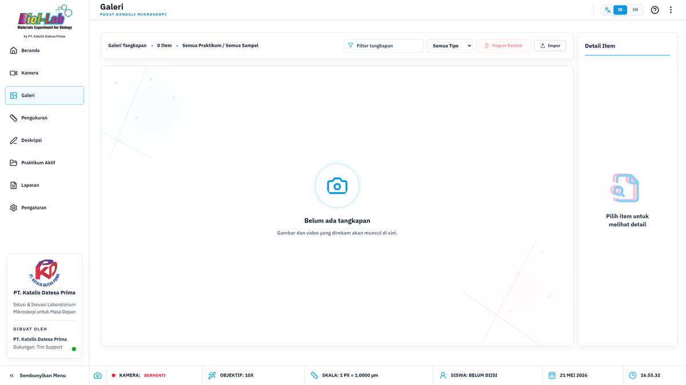
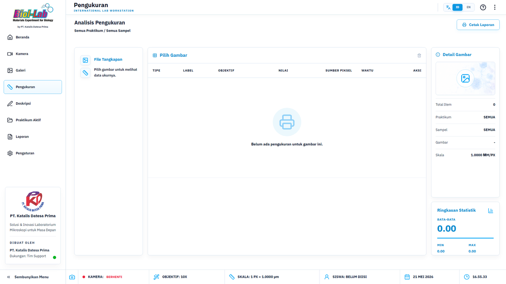
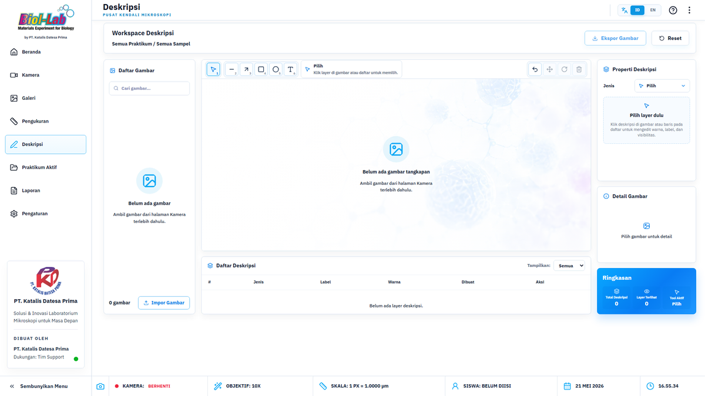
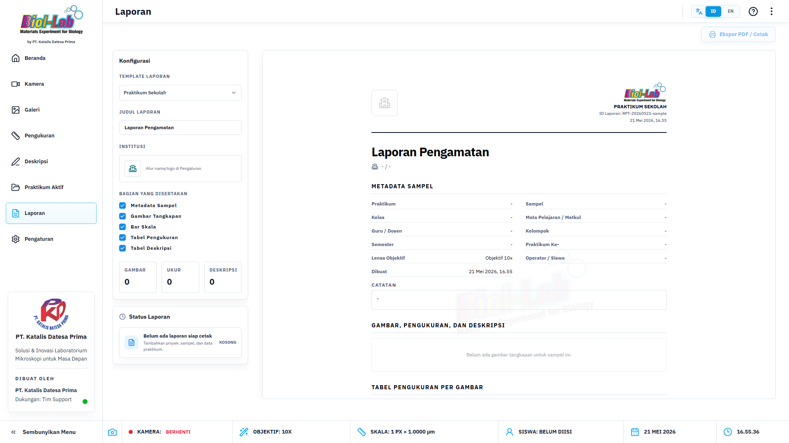
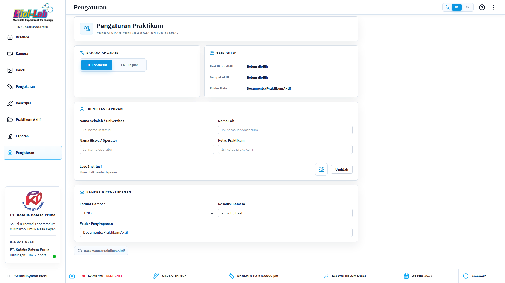

Buku Panduan Operasional Microscope KDP
Panduan standar operasional untuk guru, dosen, dan laboratorium: mulai dari pengaturan sesi praktikum, pengoperasian kamera mikroskop, kalibrasi skala, pengukuran visual, hingga cetak laporan PDF.

Alur Kerja Cepat (Standard Operating Procedure)
Urutan langkah kerja utama agar data sampel, pengukuran, dan laporan tersusun secara rapi.
Setiap foto capture dan pengukuran otomatis masuk ke praktikum/sampel yang sedang diaktifkan.
File capture tidak ditimpa garis/overlay sehingga visual asli tetap aman untuk arsip.
Gambar hasil halaman Deskripsi langsung terintegrasi otomatis ke layout laporan PDF.
Manajemen Praktikum dan Sampel
Mengatur identitas kelas, grup praktikum, operator, dan spesifikasi lensa objektif.

Langkah Operasional Sesi:
- Buka menu Praktikum Aktif dari navigasi utama.
- Klik Buat Praktikum Baru, isi Judul Praktikum, Kelas, dan Nama Pengajar.
- Tambahkan Nama Anggota Kelompok / Operator.
- Buat Sampel baru (misal: Struktur Sel Bawang Red), pilih Lensa Objektif awal (4x, 10x, 40x, 100x), lalu aktifkan sampel tersebut.
Kamera, Stream Video, & Capture
Pengoperasian kamera mikroskop via koneksi USB/HDMI maupun WiFi/WLAN IP Camera.
Kamera USB / HDMI:
- Pilih tab USB / HDMI di sidebar kanan.
- Pilih perangkat kamera mikroskop / capture card dari dropdown.
- Pilih resolusi optimal (720p atau 1080p).
- Klik Nyalakan Kamera, sesuaikan fokus mikroskop fisik, lalu tekan tombol Ambil Gambar (C).

Kamera WiFi / WLAN:
- Hubungkan komputer dan kamera ke jaringan WiFi yang sama.
- Masukkan URL Stream MJPEG / Video IP Camera.
- Masukkan URL Snapshot Foto (opsional untuk capture stabil).
- Klik Nyalakan Stream.
Galeri Tangkapan Media
Inspeksi hasil foto/video, filter sampel, detail resolusi, dan manajemen penyimpanan.

Fitur Galeri:
- Filter Jenis Media: Memilih antara Foto, Video, atau Semua Media.
- Informasi Detail File: Resolusi gambar, tanggal pembuatan, dan status keterkaitan sampel.
- Aksi Cepat: Simpan Salinan, Buka Folder Penyimpanan Lokal, dan Hapus Media.
Analisis Pengukuran Mikroskopis
Mengukur dimensi objek sel dan preparat (Garis, Diameter, Luas, Sudut) berbasis kalibrasi skala µm/px.

Mengukur panjang sel atau jarak antar 2 titik dalam unit µm / mm.
Mengukur diameter spesimen bundar seperti mikroba atau sel darah.
Menghitung cakupan area bidang sampel persegi atau khusus.
Mengukur kemiringan atau arah orientasi struktur sel.
Deskripsi & Anotasi Visual
Menambahkan label teks, panah penunjuk, dan bentuk pada foto preparat sebelum diekspor ke laporan.

Fitur Editor Anotasi:
- Panah & Teks: Menandai organel atau bagian preparat penting.
- Bentuk Geometri: Kotak dan Lingkaran penjelas.
- Ekspor Gambar Final: Hasil anotasi diekspor sebagai foto baru yang siap dimasukkan ke laporan A4.
Laporan Praktikum & Cetak PDF A4
Penyusunan dokumen resmi hasil praktikum dengan template standar dan integrasi tabel pengukuran.

Pengaturan Dokumen Laporan:
- Pilihan Template: Template Laporan Praktikum Sekolah / Penelitian Lab.
- Kustomisasi Bagian: Mengaktifkan logo sekolah, metadata kelompok, tabel pengukuran, dan catatan evaluasi.
- Ekspor Langsung: Tombol Cetak Langsung atau Simpan sebagai PDF A4.
Pengaturan Sistem & Identitas Institusi
Mengatur nama institusi, logo resmi, operator default, dan lokasi folder penyimpanan utama.

Checklist Konfigurasi Awal:
- Isi Nama Sekolah / Kampus / Laboratorium.
- Upload Logo Resmi untuk Kop Laporan.
- Tentukan lokasi folder penyimpanan hasil capture (default:
Documents/PraktikumAktif).
Troubleshooting & Solusi Masalah
Panduan cepat penanganan masalah teknis operasional aplikasi di laboratorium.
- Cabut dan pasang kembali kabel USB kamera.
- Pastikan aplikasi penampil kamera lain (Camera Windows, Zoom, Teams) sudah ditutup.
- Klik tombol Refresh Perangkat di sidebar kamera.
- Periksa saklar lampu iluminator mikroskop fisik.
- Coba turunkan resolusi kamera ke 1280x720.
- Pastikan penutup lensa fisik mikroskop sudah dibuka.
- Pastikan dropdown Lensa Objektif Aktif di aplikasi sama dengan lensa fisik yang diputar di mikroskop.
- Ulangi pengukuran setelah mengubah posisi lensa.
Checklist SOP Operasional Lab
Centang tahapan berikut saat menjalankan praktikum laboratorium.